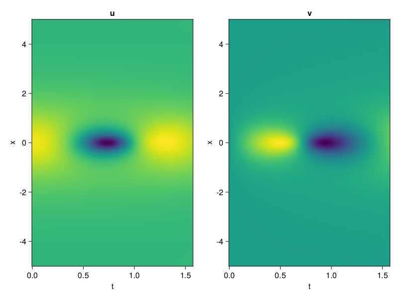
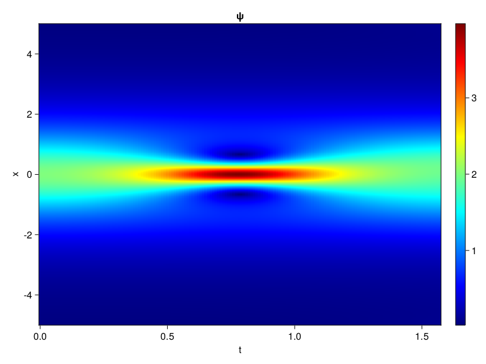
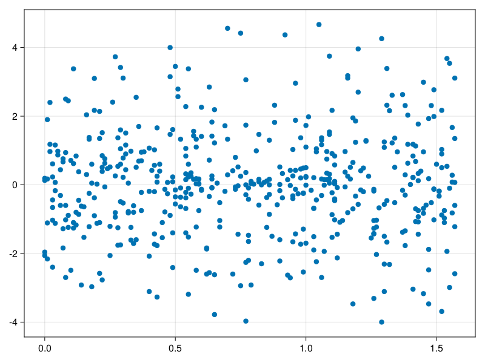

Schrödinger equation
The nonlinear Shrödinger equation is given by
\[\mathrm{i} \partial_t \psi=-\frac{1}{2} \sigma \partial_{x x} \psi-\beta|\psi|^2 \psi\]
Let $\sigma=\beta=1, \psi=u+v i$, the equation can be transformed into a system of partial differential equations
using ModelingToolkit, IntervalSets, Sophon, CairoMakie
using Optimization, OptimizationOptimJL
@parameters x,t
@variables u(..), v(..)
Dₜ = Differential(t)
Dₓ² = Differential(x)^2
eqs=[Dₜ(u(x,t)) ~ -Dₓ²(v(x,t))/2 - (abs2(v(x,t)) + abs2(u(x,t))) * v(x,t),
Dₜ(v(x,t)) ~ Dₓ²(u(x,t))/2 + (abs2(v(x,t)) + abs2(u(x,t))) * u(x,t)]
bcs = [u(x, 0.0) ~ 2sech(x),
v(x, 0.0) ~ 0.0,
u(-5.0, t) ~ u(5.0, t),
v(-5.0, t) ~ v(5.0, t)]
domains = [x ∈ Interval(-5.0, 5.0),
t ∈ Interval(0.0, π/2)]
@named pde_system = PDESystem(eqs, bcs, domains, [x,t], [u(x,t),v(x,t)])\[ \begin{align} \frac{\mathrm{d}}{\mathrm{d}t} u\left( x, t \right) =& - \frac{1}{2} \frac{\mathrm{d}}{\mathrm{d}x} \frac{\mathrm{d}}{\mathrm{d}x} v\left( x, t \right) - \left( \left|u\left( x, t \right)\right|^{2} + \left|v\left( x, t \right)\right|^{2} \right) v\left( x, t \right) \\ \frac{\mathrm{d}}{\mathrm{d}t} v\left( x, t \right) =& \frac{1}{2} \frac{\mathrm{d}}{\mathrm{d}x} \frac{\mathrm{d}}{\mathrm{d}x} u\left( x, t \right) + \left( \left|u\left( x, t \right)\right|^{2} + \left|v\left( x, t \right)\right|^{2} \right) u\left( x, t \right) \end{align} \]
pinn = PINN(u = Siren(2,1; hidden_dims=16,num_layers=4, omega = 1.0),
v = Siren(2,1; hidden_dims=16,num_layers=4, omega = 1.0))
sampler = QuasiRandomSampler(500, (200,200,20,20))
strategy = NonAdaptiveTraining(1,(10,10,1,1))
prob = Sophon.discretize(pde_system, pinn, sampler, strategy)OptimizationProblem. In-place: true
u0: ComponentVector{Float64}(u = (layer_1 = (weight = [0.13096553087234497 0.07058298587799072; -0.4168095588684082 0.4752863049507141; … ; 0.375002920627594 -0.18449068069458008; 0.40657031536102295 0.26609545946121216], bias = [0.0; 0.0; … ; 0.0; 0.0;;]), layer_2 = (weight = [-0.4764709770679474 0.5079354047775269 … -0.18860915303230286 -0.2563346028327942; -0.1399783492088318 0.4728681147098541 … 0.5116299390792847 0.5238737463951111; … ; 0.4555729925632477 0.0879208967089653 … 0.17063935101032257 -0.2778027355670929; 0.3577328622341156 0.5451334714889526 … 0.5896639823913574 -0.5716200470924377], bias = [0.0; 0.0; … ; 0.0; 0.0;;]), layer_3 = (weight = [0.2305324524641037 0.3179636001586914 … -0.39117738604545593 -0.5356948375701904; 0.3600071966648102 0.49107831716537476 … 0.27792078256607056 -0.5308883190155029; … ; 0.013345947489142418 -0.040942609310150146 … 0.19332264363765717 0.45228227972984314; -0.36948367953300476 0.48711422085762024 … -0.12973907589912415 0.5053347945213318], bias = [0.0; 0.0; … ; 0.0; 0.0;;]), layer_4 = (weight = [-0.04703807830810547 0.35610532760620117 … 0.22479219734668732 -0.3764074742794037; -0.16570328176021576 0.09136221557855606 … -0.4459417462348938 0.31271982192993164; … ; -0.32662057876586914 -0.5231429934501648 … 0.009449108503758907 0.18511059880256653; 0.14083968102931976 -0.3408948481082916 … 0.3583422601222992 -0.47607406973838806], bias = [0.0; 0.0; … ; 0.0; 0.0;;]), layer_5 = (weight = [-0.49497997760772705 0.5288636684417725 … -0.36401256918907166 0.4645934998989105], bias = [0.0;;])), v = (layer_1 = (weight = [-0.10991853475570679 -0.25355541706085205; -0.039057254791259766 -0.41947662830352783; … ; -0.06305527687072754 0.40909790992736816; 0.35922086238861084 -0.4023488163948059], bias = [0.0; 0.0; … ; 0.0; 0.0;;]), layer_2 = (weight = [0.29333898425102234 0.14026086032390594 … -0.4439995586872101 0.2693663537502289; 0.31402865052223206 0.02695024386048317 … -0.3084147572517395 0.17328350245952606; … ; 0.2426081895828247 0.053813908249139786 … -0.5409706234931946 0.46118196845054626; 0.19011090695858002 -0.5190557241439819 … 0.5530760884284973 0.24531453847885132], bias = [0.0; 0.0; … ; 0.0; 0.0;;]), layer_3 = (weight = [-0.42311426997184753 0.5657489895820618 … -0.3561862111091614 -0.0921396017074585; -0.002690140623599291 -0.4225134253501892 … 0.5173678398132324 0.08357357233762741; … ; 0.22897271811962128 -0.23879340291023254 … -0.2980021834373474 0.28229081630706787; -0.13758999109268188 0.1742301732301712 … 0.4158932864665985 0.4657886028289795], bias = [0.0; 0.0; … ; 0.0; 0.0;;]), layer_4 = (weight = [-0.4411378800868988 0.014083982445299625 … -0.16302664577960968 0.08281305432319641; 0.27430301904678345 -0.25484728813171387 … 0.0583888478577137 0.16248519718647003; … ; 0.5670881867408752 -0.1794937252998352 … -0.09851005673408508 0.46942338347435; 0.418623149394989 0.28560882806777954 … 0.596129298210144 0.2839576303958893], bias = [0.0; 0.0; … ; 0.0; 0.0;;]), layer_5 = (weight = [-0.5185407400131226 -0.36786043643951416 … 0.4801751673221588 -0.5567407608032227], bias = [0.0;;])))Now we train the neural nets and resample data while training.
function train(pde_system, prob, sampler, strategy, resample_period = 500, n=10)
bfgs = BFGS()
res = Optimization.solve(prob, bfgs; maxiters=2000)
for i in 1:n
data = Sophon.sample(pde_system, sampler)
prob = remake(prob; u0=res.u, p=data)
res = Optimization.solve(prob, bfgs; maxiters=resample_period)
end
return res
end
res = train(pde_system, prob, sampler, strategy)u: ComponentVector{Float64}(u = (layer_1 = (weight = [0.24832007426730668 -0.1456032274913547; -0.4446395172800253 0.03939138469695264; … ; 0.7040076558278561 -0.5051195318036318; 0.43011119342843956 -0.04857759127783888], bias = [-0.08209207318569434; -0.19276270799259196; … ; -0.0629477022746135; 0.33084274327982544;;]), layer_2 = (weight = [-0.5535961576261339 0.6603154422801385 … -0.30232134124355287 -0.3507785322140651; -0.11256287009585107 0.6677157419460262 … 0.06989595516066127 0.5515657276830747; … ; 0.35922697499370676 0.11764135984253916 … -0.015333225167983402 -0.4377746376382622; 0.23318223272942137 0.47228436044669586 … 0.3088213663967317 -0.4878313535769951], bias = [0.010623566863355688; -0.13892413566399262; … ; 0.10183811135134785; -0.012847872781991001;;]), layer_3 = (weight = [0.15149951574377704 0.6391360474773973 … -0.5725971134145829 -0.508723776590737; 0.2018127343500009 0.005682125296032963 … 0.32756362799166033 -0.384552264291184; … ; 0.13778347725134854 0.24544956217385008 … 0.34472479409204904 0.33263570324550873; -0.06598898270792876 0.41543328262662366 … 0.016453249051001467 0.31615142608334157], bias = [0.21809034477485834; -0.4793747326661383; … ; 0.2313352641744206; -0.4980894155307038;;]), layer_4 = (weight = [0.2863265657742199 0.846322145324115 … 0.3059232411597771 -0.4461165180948476; -0.12247598972496233 0.07893426996146677 … -0.3556740825643125 0.36486982457433265; … ; -0.4361692920819788 -0.5770969911318594 … 0.30692214431240966 0.3536523369967187; 0.12443210782617804 -0.07886352969088593 … 0.5296922578258634 -0.18662691544391882], bias = [-0.16876571599132806; -0.011339521956476951; … ; -0.19788002902048973; 0.5987578383513694;;]), layer_5 = (weight = [-0.4008170863668074 1.0174142651683606 … -0.8473405392374748 0.22240700171629604], bias = [0.3429065548427092;;])), v = (layer_1 = (weight = [-0.4209818697165035 -0.049120764597406184; 0.44541142302559705 -0.3276292933432449; … ; -0.09508403878063605 0.09294587506695114; 0.8202619148125501 -0.2892907437738351], bias = [0.361092799161598; 0.2839940810701015; … ; 0.3764355763048926; 0.3495802105123552;;]), layer_2 = (weight = [0.37783970378497034 -0.0003541958828123024 … -0.5286017321139441 0.24678693777156877; 0.37383263601159344 0.23561845512708499 … -0.2838370796427934 0.14457977922658014; … ; 0.2515533985179115 0.056168979710107605 … -0.5311640277218728 0.37966483529074324; 0.15016978762478417 -0.5125098740087827 … 0.6816245239905487 -0.007343084941438109], bias = [-0.1677883467535997; 0.08950199510823778; … ; -0.23602898315650298; 0.05470386902907079;;]), layer_3 = (weight = [-0.6864556139053439 0.5204418605944243 … -0.6434430848676305 0.08315374396094892; 0.009963560815378244 -0.489335595793677 … 0.595130973717402 0.023615576198521004; … ; 0.3448966816080109 0.0038100322583152877 … -0.3106227992819825 0.28019117653959025; -0.036721400503111186 -4.82443303152136e-5 … 0.46810646981897897 0.18185237151023556], bias = [0.7745216403091928; -0.05728016820406799; … ; 0.05747443087285671; -0.054787819780601384;;]), layer_4 = (weight = [-0.43569701376961734 -0.13440762344661145 … -0.2887953903965221 0.0667571510359285; 0.042878137321212796 -0.26530462989105924 … -0.10663378478717014 0.4380325619030635; … ; 0.9990461866848774 0.038778800601569144 … -0.11964170379328468 0.6858238513832648; -0.24819303792410036 0.12348990559751492 … 0.07269487521208026 0.4459240543967639], bias = [0.1676011490804898; 0.11691747238452031; … ; -0.7749072551310958; 0.2449252743286781;;]), layer_5 = (weight = [-1.3288522862858834 -0.534080093859105 … 0.44256824759432695 -0.7869120051953071], bias = [-0.09388311090944607;;])))phi = pinn.phi
ps = res.u
xs, ts= [infimum(d.domain):0.01:supremum(d.domain) for d in pde_system.domain]
u = [sum(phi.u(([x,t]), ps.u)) for x in xs, t in ts]
v = [sum(phi.v(([x,t]), ps.v)) for x in xs, t in ts]
ψ = @. sqrt(u^2+ v^2)
axis = (xlabel="t", ylabel="x", title="u")
fig, ax1, hm1 = heatmap(ts, xs, u', axis=axis)
ax2, hm2= heatmap(fig[1, end+1], ts, xs, v', axis= merge(axis, (; title="v")))
display(fig)
axis = (xlabel="t", ylabel="x", title="ψ")
fig, ax1, hm1 = heatmap(ts, xs, ψ', axis=axis, colormap=:jet)
Colorbar(fig[:, end+1], hm1)
display(fig)
Customize Sampling
Bascially any sampling method is supportted. For example we can sample data according to the predicted solution.
using StatsBase
data = vec([[x, t] for x in xs, t in ts])
wv = vec(ψ)
new_data = wsample(data, wv, 500)
new_data = reduce(hcat, new_data)
fig, ax = scatter(new_data[2,:], new_data[1,:])
prob.p[1] = new_data
prob.p[2] = new_data
prob = remake(prob; u0 = res.u)
# res = Optimization.solve(prob, bfgs; maxiters=1000)OptimizationProblem. In-place: true
u0: ComponentVector{Float64}(u = (layer_1 = (weight = [0.24832007426730668 -0.1456032274913547; -0.4446395172800253 0.03939138469695264; … ; 0.7040076558278561 -0.5051195318036318; 0.43011119342843956 -0.04857759127783888], bias = [-0.08209207318569434; -0.19276270799259196; … ; -0.0629477022746135; 0.33084274327982544;;]), layer_2 = (weight = [-0.5535961576261339 0.6603154422801385 … -0.30232134124355287 -0.3507785322140651; -0.11256287009585107 0.6677157419460262 … 0.06989595516066127 0.5515657276830747; … ; 0.35922697499370676 0.11764135984253916 … -0.015333225167983402 -0.4377746376382622; 0.23318223272942137 0.47228436044669586 … 0.3088213663967317 -0.4878313535769951], bias = [0.010623566863355688; -0.13892413566399262; … ; 0.10183811135134785; -0.012847872781991001;;]), layer_3 = (weight = [0.15149951574377704 0.6391360474773973 … -0.5725971134145829 -0.508723776590737; 0.2018127343500009 0.005682125296032963 … 0.32756362799166033 -0.384552264291184; … ; 0.13778347725134854 0.24544956217385008 … 0.34472479409204904 0.33263570324550873; -0.06598898270792876 0.41543328262662366 … 0.016453249051001467 0.31615142608334157], bias = [0.21809034477485834; -0.4793747326661383; … ; 0.2313352641744206; -0.4980894155307038;;]), layer_4 = (weight = [0.2863265657742199 0.846322145324115 … 0.3059232411597771 -0.4461165180948476; -0.12247598972496233 0.07893426996146677 … -0.3556740825643125 0.36486982457433265; … ; -0.4361692920819788 -0.5770969911318594 … 0.30692214431240966 0.3536523369967187; 0.12443210782617804 -0.07886352969088593 … 0.5296922578258634 -0.18662691544391882], bias = [-0.16876571599132806; -0.011339521956476951; … ; -0.19788002902048973; 0.5987578383513694;;]), layer_5 = (weight = [-0.4008170863668074 1.0174142651683606 … -0.8473405392374748 0.22240700171629604], bias = [0.3429065548427092;;])), v = (layer_1 = (weight = [-0.4209818697165035 -0.049120764597406184; 0.44541142302559705 -0.3276292933432449; … ; -0.09508403878063605 0.09294587506695114; 0.8202619148125501 -0.2892907437738351], bias = [0.361092799161598; 0.2839940810701015; … ; 0.3764355763048926; 0.3495802105123552;;]), layer_2 = (weight = [0.37783970378497034 -0.0003541958828123024 … -0.5286017321139441 0.24678693777156877; 0.37383263601159344 0.23561845512708499 … -0.2838370796427934 0.14457977922658014; … ; 0.2515533985179115 0.056168979710107605 … -0.5311640277218728 0.37966483529074324; 0.15016978762478417 -0.5125098740087827 … 0.6816245239905487 -0.007343084941438109], bias = [-0.1677883467535997; 0.08950199510823778; … ; -0.23602898315650298; 0.05470386902907079;;]), layer_3 = (weight = [-0.6864556139053439 0.5204418605944243 … -0.6434430848676305 0.08315374396094892; 0.009963560815378244 -0.489335595793677 … 0.595130973717402 0.023615576198521004; … ; 0.3448966816080109 0.0038100322583152877 … -0.3106227992819825 0.28019117653959025; -0.036721400503111186 -4.82443303152136e-5 … 0.46810646981897897 0.18185237151023556], bias = [0.7745216403091928; -0.05728016820406799; … ; 0.05747443087285671; -0.054787819780601384;;]), layer_4 = (weight = [-0.43569701376961734 -0.13440762344661145 … -0.2887953903965221 0.0667571510359285; 0.042878137321212796 -0.26530462989105924 … -0.10663378478717014 0.4380325619030635; … ; 0.9990461866848774 0.038778800601569144 … -0.11964170379328468 0.6858238513832648; -0.24819303792410036 0.12348990559751492 … 0.07269487521208026 0.4459240543967639], bias = [0.1676011490804898; 0.11691747238452031; … ; -0.7749072551310958; 0.2449252743286781;;]), layer_5 = (weight = [-1.3288522862858834 -0.534080093859105 … 0.44256824759432695 -0.7869120051953071], bias = [-0.09388311090944607;;])))